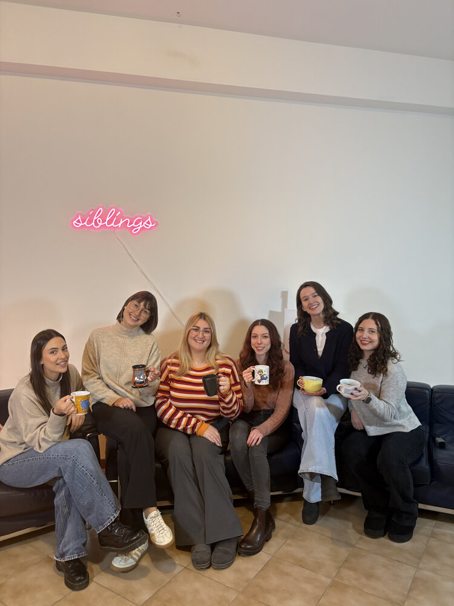
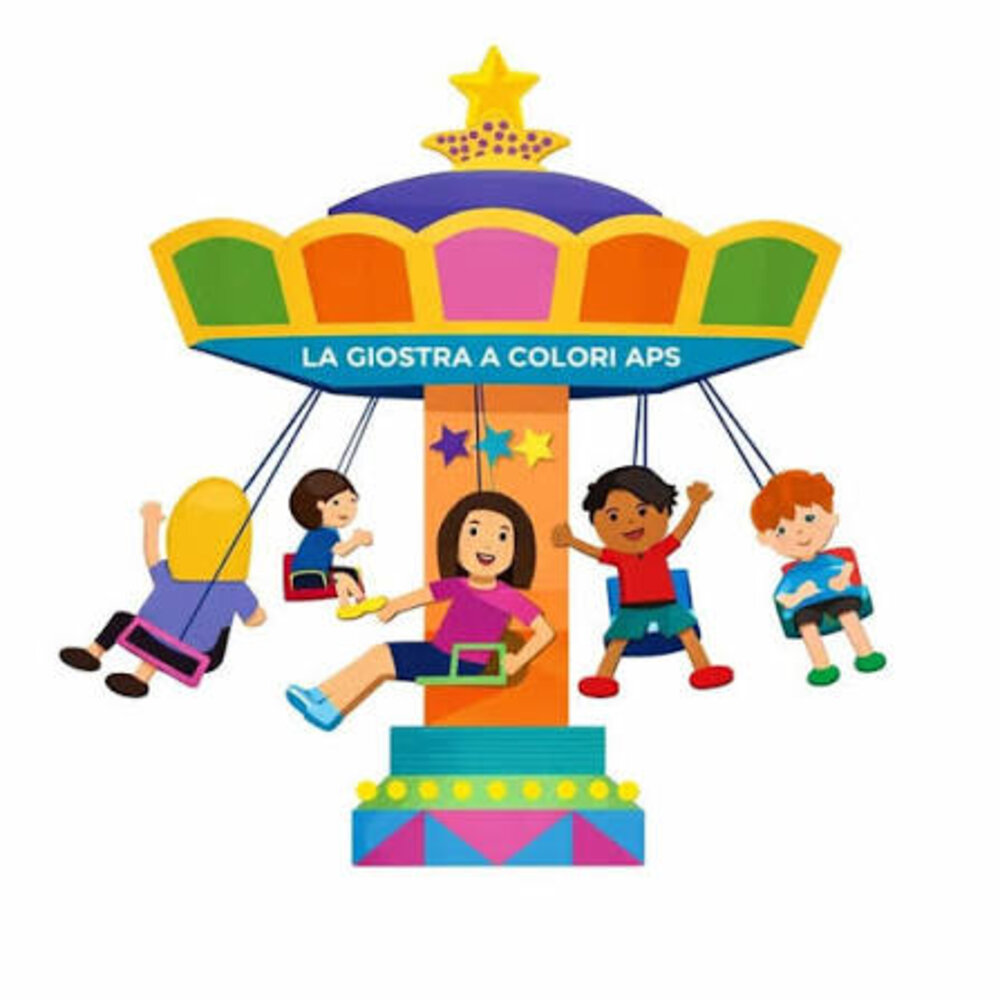
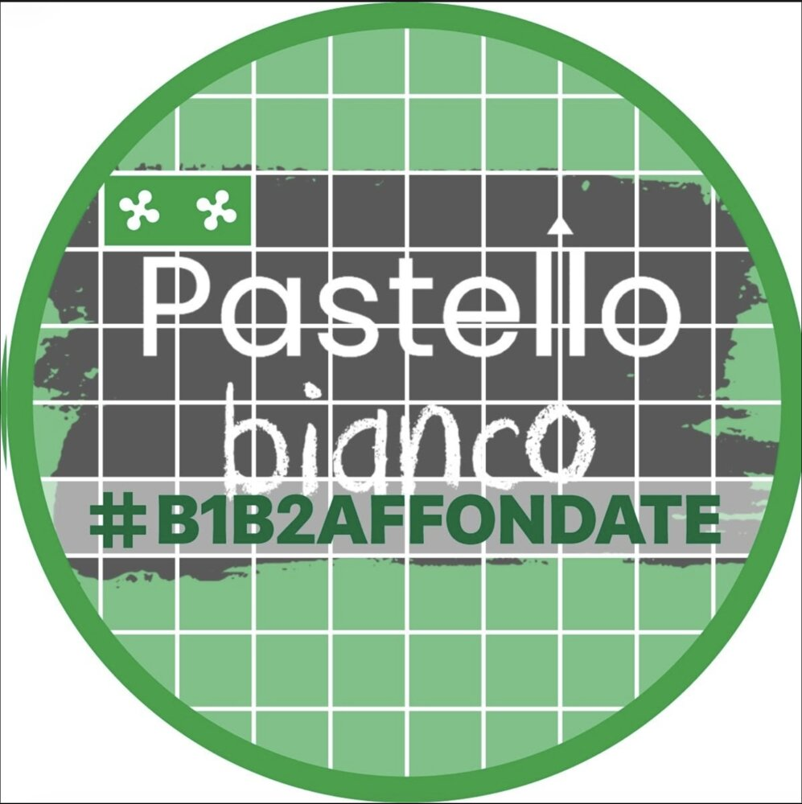
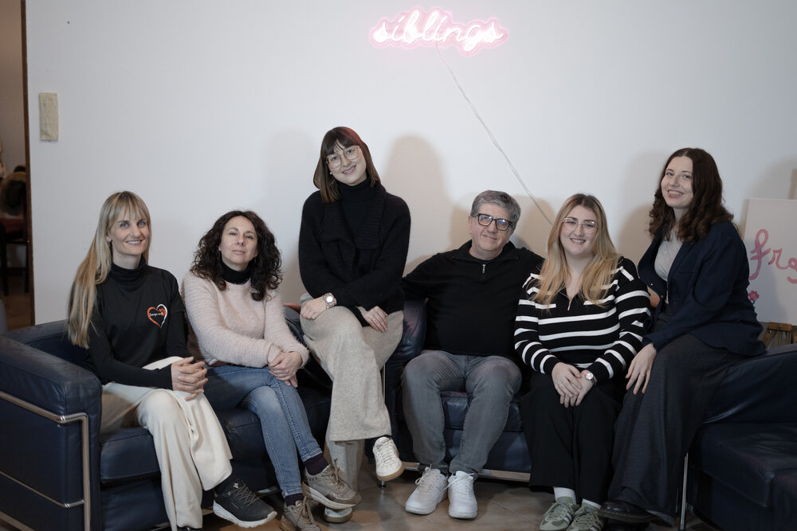
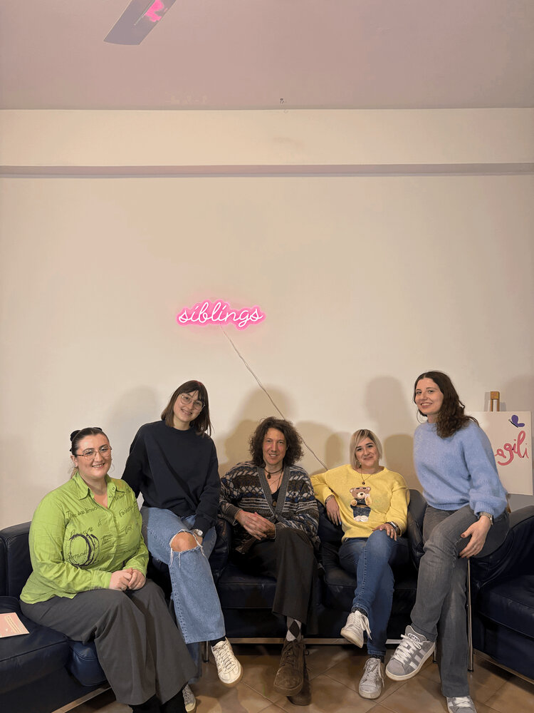
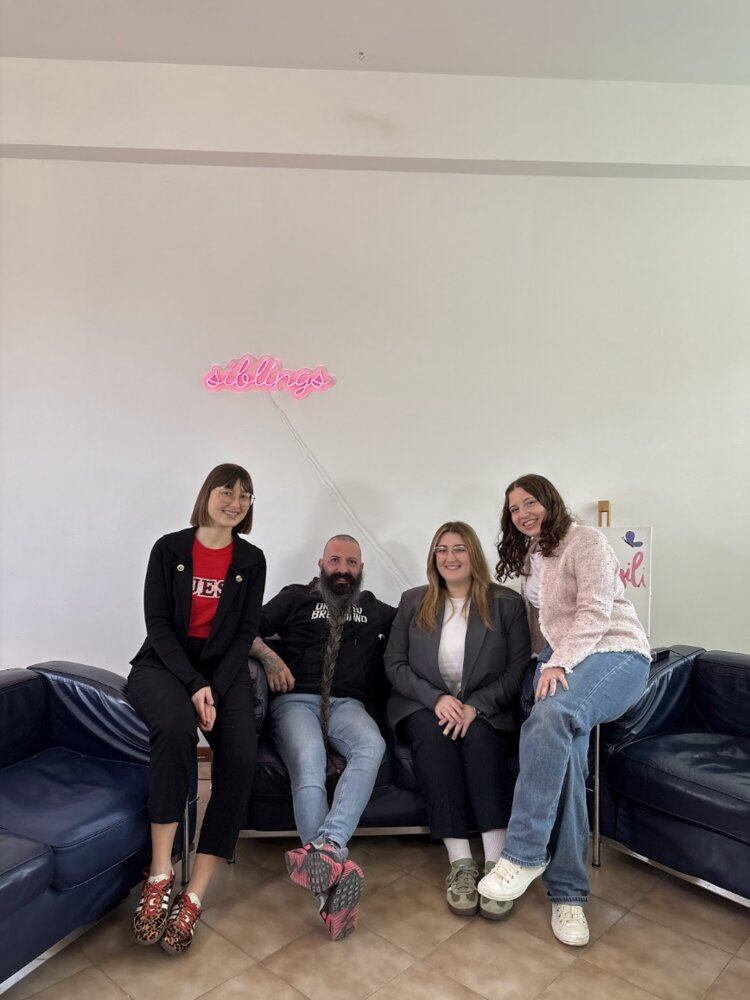
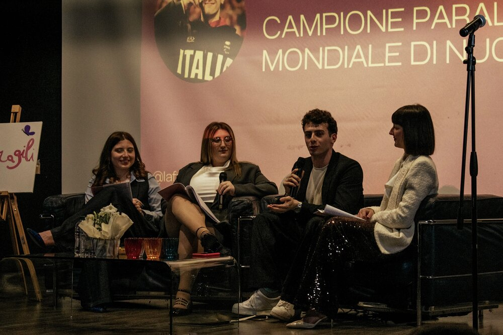
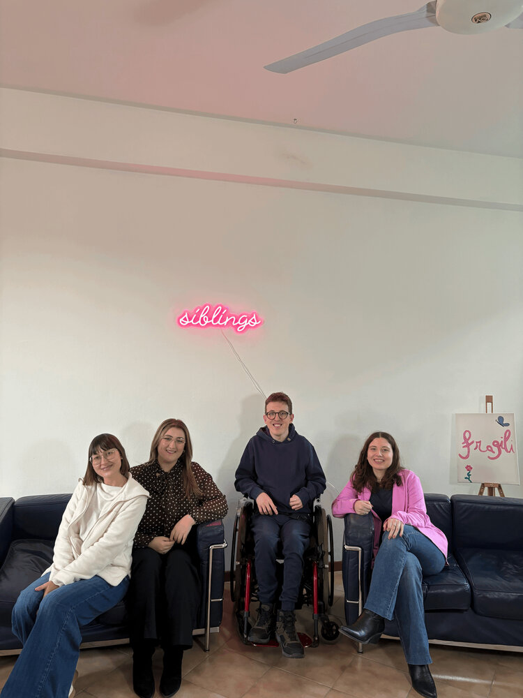

Associazioni e ospiti
Le persone e le realtà che abbiamo incontrato
Scorri per scoprire chi abbiamo intervistato: ogni scheda porta dritta alla puntata dedicata.

Fabiana Pirrera, Roberta Bara e Genita Telaku
Tre ragazze, tre amiche, tre siblings.
Ascolta la puntata →
Associazione "La Giostra a Colori"
Centro ludico ricreativo per ragazzi con disabilità con sede a Rovato (BS), nato dall'esigenza di alcuni genitori di avere un luogo accogliente e sicuro per i propri ragazzi.
Ascolta la puntata →
Associazione "Pastello Bianco"
Associazione con sede a Cologne (BS) nata dall'esigenza di alcuni genitori di avere un luogo accogliente e sicuro per i propri ragazzi e per le famiglie dei ragazzi.
Ascolta la puntata →
Eugenio Turra, Sara Novali e Arianna Turola
Eugenio si occupa di teatro con i ragazzi dell'associazione "La Giostra a Colori", Sara e Arianna raccontano la loro professione e le attività di pet therapy studiate per ragazzi con disabilità.
Ascolta la puntata →
Michela Bosio e Giovanni Bersini
Insegnanti di musica, collaborano con l'associazione "La Giostra a Colori" per progetti musicali ed educativi.
Ascolta la puntata →
Diego Bazoli
Co-founder di "Orgoglio Bresciano", fondatore della nazionale italiana "Barbuti" e del gruppo "Bearded Brixia"; racconta la sua vita solidale e inclusiva.
Ascolta la puntata →
Federico Bicelli
Campione paralimpico vincitore della medaglia Oro a Parigi 2024.
Ascolta la puntata →
Cris Brave
Ragazzo bergamasco, personaggio pubblico a 360°. Cantante e content creator.
Ascolta la puntata →